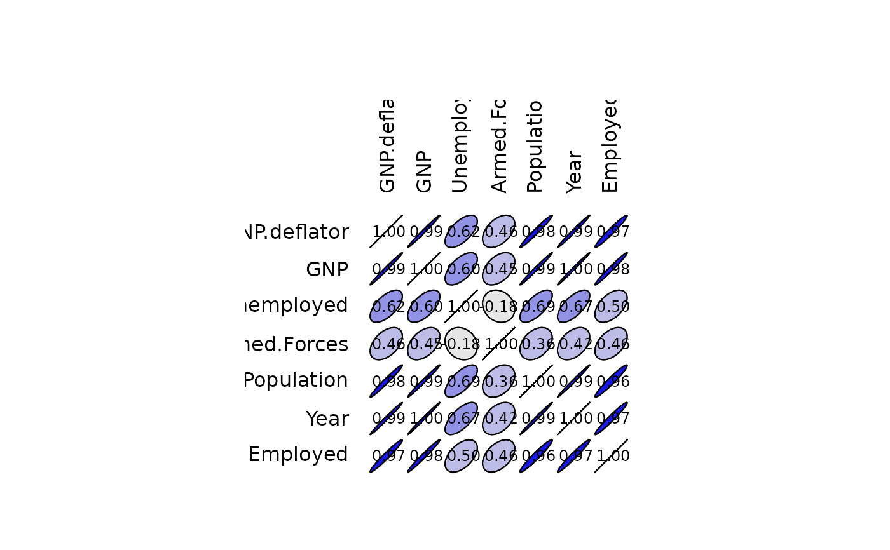

Compute the correlation matrix between all columns of a matrix or data frame.
correlation(x, ...)
Correlation(x, ...)
# S3 method for class 'formula'
correlation(formula, data = NULL, subset, na.action, ...)
# Default S3 method
correlation(
x,
y = NULL,
use = "everything",
method = c("pearson", "kendall", "spearman"),
...
)
is.Correlation(x)
is.correlation(x)
as.Correlation(x)
as.correlation(x)
# S3 method for class 'Correlation'
print(x, digits = 3, cutoff = 0, ...)
# S3 method for class 'Correlation'
summary(
object,
cutpoints = c(0.3, 0.6, 0.8, 0.9, 0.95),
symbols = c(" ", ".", ",", "+", "*", "B"),
...
)
# S3 method for class 'summary.Correlation'
print(x, ...)
# S3 method for class 'Correlation'
plot(
x,
y = NULL,
outline = TRUE,
cutpoints = c(0.3, 0.6, 0.8, 0.9, 0.95),
palette = rwb.colors,
col = NULL,
numbers = TRUE,
digits = 2,
type = c("full", "lower", "upper"),
diag = (type == "full"),
cex.lab = par("cex.lab"),
cex = 0.75 * par("cex"),
...
)
# S3 method for class 'Correlation'
lines(
x,
choices = 1L:2L,
col = par("col"),
lty = 2,
ar.length = 0.1,
pos = NULL,
cex = par("cex"),
labels = rownames(x),
...
)Arguments
- x
A numeric vector, matrix or data frame (or any object for
is.Correlation()oras.Correlation()).- ...
Further arguments passed to functions.
- formula
A formula with no response variable, referring only to numeric variables.
- data
An optional data frame (or similar, see
stats::model.frame()) containing the variables in the formula. By default the variables are taken fromenvironment(formula).- subset
An optional vector used to select rows (observations) of the data matrix
x.- na.action
A function which indicates what should happen when the data contain
NAs. The default is set by thena.actionsetting ofoptions()andstats::na.fail()is used if that is not set. The 'factory-fresh' default isstats::na.omit().- y
NULL(default), or a vector, matrix or data frame with compatible dimensions toxforCorrelation(). The default is equivalent tox = y, but more efficient.- use
An optional character string giving a method for computing correlations in the presence of missing values. This must be (an abbreviation of) one of the strings
"everything","all.obs","complete.obs","na.or.complete", or"pairwise.complete.obs".- method
A character string indicating which correlation coefficient is to be computed. One of
"pearson"(default),"kendall", or"spearman", can be abbreviated.- digits
Digits to print after the decimal separator.
- cutoff
Correlation coefficients lower than this (in absolute value) are suppressed.
- object
A 'Correlation' object.
- cutpoints
The cut points to use for categories. Specify only positive values (absolute value of correlation coefficients are summarized, or negative equivalents are automatically computed for the graph. Do not include 0 or 1 in the cutpoints).
- symbols
The symbols to use to summarize the correlation matrix.
- outline
Do we draw the outline of the ellipse?
- palette
A function that can produce a palette of colors.
- col
Color of the ellipse. If
NULL(default), the colors will be computed usingcutpointsandpalette.- numbers
Do we print correlation values in the center of the ellipses?
- type
Do we plot a complete matrix, or only lower or upper triangle?
- diag
Do we plot items on the diagonal? They have always a correlation of one.
- cex.lab
The expansion factor for labels.
- cex
The expansion factor for text.
- choices
The items to select.
- lty
The line type to draw.
- ar.length
The length of the arrow head.
- pos
The position relative to arrows.
- labels
The label to draw near the arrows.
Value
Correlation() and as.Correlation() create a 'Correlation'
object, while is.Correlation() tests for it.
There are print() and summary() methods for the 'Correlation' object
that differ in the symbolic encoding of the correlations,
(using stats::symnum() for summary()), which makes large correlation
matrices more readable.
The plot() method draws ellipses on a graph to represent the correlation
matrix visually. This is essentially the ellipse::plotcorr() function, with
slightly different default arguments and with default cutpoints equivalent
to those used in the summary() method.
See also
stats::cov(), stats::cov2cor(), stats::cov.wt(), stats::symnum(), ellipse::plotcorr() and look
also at panel_cor()
Examples
# This is a simple correlation coefficient
cor(rnorm(10), runif(10))
#> [1] 0.001837143
Correlation(rnorm(10), runif(10))
#> Matrix of Pearson's product-moment correlation:
#> (calculation uses everything)
#> x y
#> x 1.000 0.288
#> y 0.288 1.000
# 'Correlation' objects allow better inspection of the correlation matrices
# than the output of default R cor() function
(longley.cor <- Correlation(longley))
#> Matrix of Pearson's product-moment correlation:
#> (calculation uses everything)
#> GNP.deflator GNP Unemployed Armed.Forces Population Year
#> GNP.deflator 1.000 0.992 0.621 0.465 0.979 0.991
#> GNP 0.992 1.000 0.604 0.446 0.991 0.995
#> Unemployed 0.621 0.604 1.000 -0.177 0.687 0.668
#> Armed.Forces 0.465 0.446 -0.177 1.000 0.364 0.417
#> Population 0.979 0.991 0.687 0.364 1.000 0.994
#> Year 0.991 0.995 0.668 0.417 0.994 1.000
#> Employed 0.971 0.984 0.502 0.457 0.960 0.971
#> Employed
#> GNP.deflator 0.971
#> GNP 0.984
#> Unemployed 0.502
#> Armed.Forces 0.457
#> Population 0.960
#> Year 0.971
#> Employed 1.000
summary(longley.cor) # Synthetic view of the correlation matrix
#> Matrix of Pearson's product-moment correlation:
#> (calculation uses everything)
#> GNP. GNP U A P Y E
#> GNP.deflator 1
#> GNP B 1
#> Unemployed , , 1
#> Armed.Forces . . 1
#> Population B B , . 1
#> Year B B , . B 1
#> Employed B B . . B B 1
#> attr(,"legend")
#> [1] 0 ‘ ’ 0.3 ‘.’ 0.6 ‘,’ 0.8 ‘+’ 0.9 ‘*’ 0.95 ‘B’ 1
plot(longley.cor) # Graphical representation

# Use of the formula interface
(mtcars.cor <- Correlation(~ mpg + cyl + disp + hp, data = mtcars,
method = "spearman", na.action = "na.omit"))
#> Matrix of Spearman's rank correlation rho:
#> (missing values are managed with na.omit)
#> mpg cyl disp hp
#> mpg 1.000 -0.911 -0.909 -0.895
#> cyl -0.911 1.000 0.928 0.902
#> disp -0.909 0.928 1.000 0.851
#> hp -0.895 0.902 0.851 1.000
mtcars.cor2 <- Correlation(mtcars, method = "spearman")
print(mtcars.cor2, cutoff = 0.6)
#> Matrix of Spearman's rank correlation rho:
#> (calculation uses everything)
#> mpg cyl disp hp drat wt qsec vs am gear
#> mpg 1.000 -0.911 -0.909 -0.895 0.651 -0.886 0.707
#> cyl -0.911 1.000 0.928 0.902 -0.679 0.858 -0.814
#> disp -0.909 0.928 1.000 0.851 -0.684 0.898 -0.724 -0.624
#> hp -0.895 0.902 0.851 1.000 0.775 -0.667 -0.752
#> drat 0.651 -0.679 -0.684 1.000 -0.750 0.687 0.745
#> wt -0.886 0.858 0.898 0.775 -0.750 1.000 -0.738 -0.676
#> qsec -0.667 1.000 0.792
#> vs 0.707 -0.814 -0.724 -0.752 0.792 1.000
#> am -0.624 0.687 -0.738 1.000 0.808
#> gear 0.745 -0.676 0.808 1.000
#> carb -0.657 0.733 -0.659 -0.634
#> carb
#> mpg -0.657
#> cyl
#> disp
#> hp 0.733
#> drat
#> wt
#> qsec -0.659
#> vs -0.634
#> am
#> gear
#> carb 1.000
summary(mtcars.cor2)
#> Matrix of Spearman's rank correlation rho:
#> (calculation uses everything)
#> m cy ds h dr w q v a g cr
#> mpg 1
#> cyl * 1
#> disp * * 1
#> hp + * + 1
#> drat , , , . 1
#> wt + + + , , 1
#> qsec . . . , 1
#> vs , + , , . . , 1
#> am . . , . , , 1
#> gear . . . . , , + 1
#> carb , . . , . , , 1
#> attr(,"legend")
#> [1] 0 ‘ ’ 0.3 ‘.’ 0.6 ‘,’ 0.8 ‘+’ 0.9 ‘*’ 0.95 ‘B’ 1
plot(mtcars.cor2, type = "lower")
 mtcars.cor2["mpg", "cyl"] # Extract a correlation from the correlation matrix
#> [1] -0.9108013
mtcars.cor2["mpg", "cyl"] # Extract a correlation from the correlation matrix
#> [1] -0.9108013